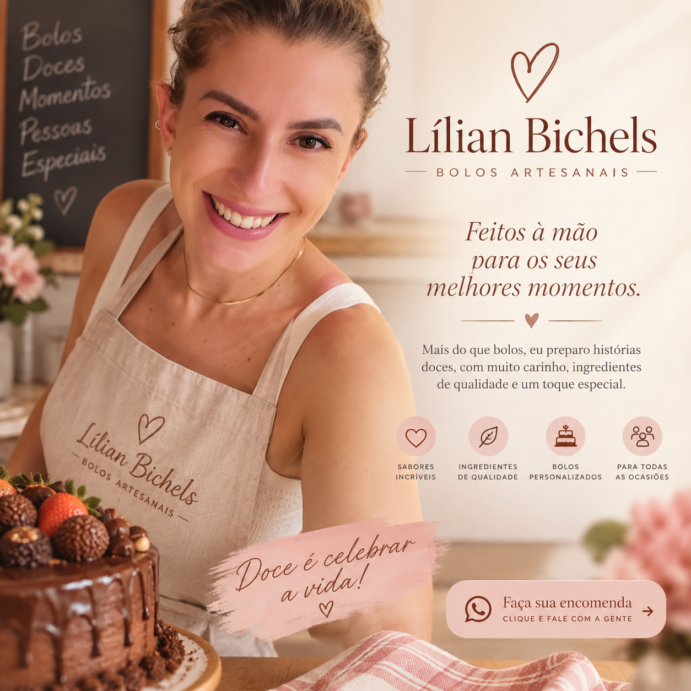

🍫
EXEMPLO
Chocolate Especial
Massa macia, recheio cremoso e acabamento artesanal.
Preço a definirBOLOS ARTESANAIS • FEITOS COM CARINHO
Bolos artesanais preparados com cuidado para aniversários, encontros e celebrações que merecem um sabor especial.
Foto principal do bolo
Substituiremos pelas fotos da LílianNOSSO CARDÁPIO
Produtos e preços abaixo são exemplos para o MVP e serão atualizados após o briefing.
Massa macia, recheio cremoso e acabamento artesanal.
Preço a definirUma opção delicada e fresca para comemorações especiais.
Preço a definirCriado especialmente para combinar com a sua celebração.
Sob consulta
POR TRÁS DE CADA BOLO
Este espaço será usado para contar a história da Lílian, sua relação com a confeitaria e aquilo que torna seus bolos especiais.
Texto provisório — vamos substituir pelas respostas do questionário.
COMO ENCOMENDAR
Veja os sabores e encontre o bolo ideal.
Informe data, tamanho e detalhes da encomenda.
Combine retirada ou entrega e aproveite.
Fale diretamente com a Lílian para consultar sabores, disponibilidade e valores.